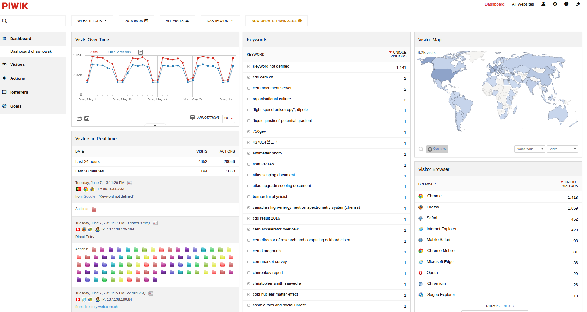
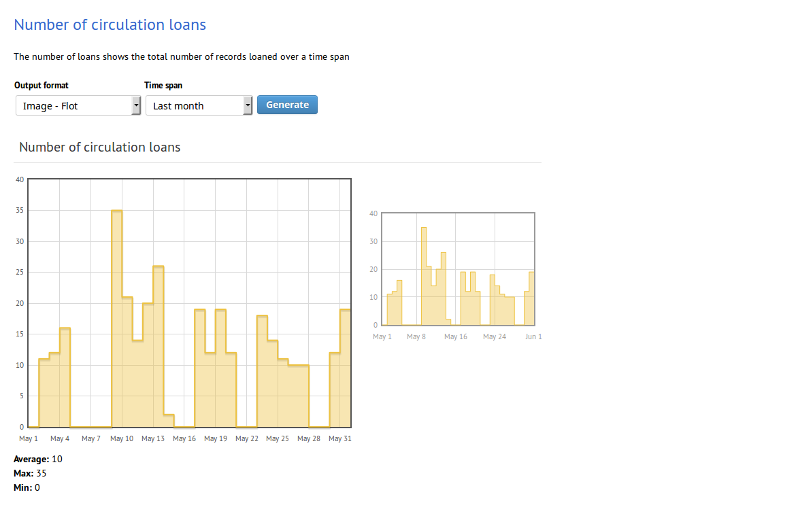

This presentation will be about unicorns!
Actually, no. It will be about statistics
But, man, I wish it was about unicorns!
CDS in statistics:
How do we know what our users do?
It's simple, everything is in the logs, right?
66.249.78.171 - - [05/Jun/2016:04:16:53 +0200] "GET /archive/electronic/cern/preprints/thesis/thesis-99-060.pdf HTTP/1.1" 301 385 "-" "Mozilla/5.0 (compatible; Googlebot/2.1; +http://www.google.com/bot.html)"
163.172.14.55 - - [05/Jun/2016:04:19:06 +0200] "GET /cgi-bin/setlink?base=preprint&categ=cern&id=open-2000-039 HTTP/1.1" 301 342 "-" "Mozilla/5.0 ((Windows; U; Windows NT 6.1; fr; rv:1.9.2) Gecko/20100115 Firefox/3.6)"
66.249.64.42 - - [05/Jun/2016:04:19:35 +0200] "GET /yellowrep/2001/2001-003/p125.pdf HTTP/1.1" 301 347 "-" "Mozilla/5.0 (Linux; Android 6.0.1; Nexus 5X Build/MMB29P) AppleWebKit/537.36 (KHTML, like Gecko) Chrome/41.0.2272.96 Mobile Safari/537.36 (compatible; Googlebot/2.1; +http://www.google.com/bot.html)"
68.180.231.38 - - [05/Jun/2016:04:21:12 +0200] "GET /robots.txt HTTP/1.1" 301 337 "-" "Mozilla/5.0 (compatible; Yahoo! Slurp; http://help.yahoo.com/help/us/ysearch/slurp)"
68.180.231.38 - - [05/Jun/2016:04:21:13 +0200] "GET /cgi-bin/setlink?base=preprint&categ=hep-ph&id=9801426 HTTP/1.1" 301 342 "-" "Mozilla/5.0 (compatible; Yahoo! Slurp; http://help.yahoo.com/help/us/ysearch/slurp)"
66.249.78.144 - - [05/Jun/2016:04:22:10 +0200] "GET /cgi-bin/dir2html.sh?dir=/archive/electronic/cern/others/multimedia/presentation/lepfest/steinberger HTTP/1.1" 301 334 "-" "Mozilla/5.0 (Linux; Android 6.0.1; Nexus 5X Build/MMB29P) AppleWebKit/537.36 (KHTML, like Gecko) Chrome/41.0.2272.96 Mobile Safari/537.36 (compatible; Googlebot/2.1; +http://www.google.com/bot.html)"
66.249.78.130 - - [05/Jun/2016:04:22:10 +0200] "GET /cgi-bin/dir2html.sh?dir=/archive/electronic/cern/others/multimedia/presentation/lepfest/steinberger HTTP/1.1" 301 334 "-" "Mozilla/5.0 (Linux; Android 6.0.1; Nexus 5X Build/MMB29P) AppleWebKit/537.36 (KHTML, like Gecko) Chrome/41.0.2272.96 Mobile Safari/537.36 (compatible; Googlebot/2.1; +http://www.google.com/bot.html)"
195.154.146.240 - - [05/Jun/2016:04:22:13 +0200] "GET /cgi-bin/setlink?base=cernrep&categ=Yellow_Report&id=2000-007 HTTP/1.1" 301 342 "-" "Mozilla/5.0 ((Windows; U; Windows NT 6.1; fr; rv:1.9.2) Gecko/20100115 Firefox/3.6)"
195.154.146.240 - - [05/Jun/2016:04:22:29 +0200] "GET /format/showfull?uid=610705&base=CERCER&sysnb=0210064.html HTTP/1.1" 301 356 "-" "Mozilla/5.0 ((Windows; U; Windows NT 6.1; fr; rv:1.9.2) Gecko/20100115 Firefox/3.6)"
66.249.78.137 - - [05/Jun/2016:04:23:00 +0200] "GET /archive/electronic/cern/others/PHO/photo-cms/oreach//oreach-2009-001_05.jpg HTTP/1.1" 301 390 "-" "Googlebot-Image/1.0"
66.249.78.130 - - [05/Jun/2016:04:23:13 +0200] "GET /cgi-bin/dir2html.sh?dir=/archive/electronic/cern/others/multimedia/presentation/lepfest/schopper HTTP/1.1" 301 334 "-" "Mozilla/5.0 (Linux; Android 6.0.1; Nexus 5X Build/MMB29P) AppleWebKit/537.36 (KHTML, like Gecko) Chrome/41.0.2272.96 Mobile Safari/537.36 (compatible; Googlebot/2.1; +http://www.google.com/bot.html)"
66.249.78.218 - - [05/Jun/2016:04:23:37 +0200] "GET /EDS/current/access/SL.php HTTP/1.1" 301 352 "-" "Mozilla/5.0 (Linux; Android 6.0.1; Nexus 5X Build/MMB29P) AppleWebKit/537.36 (KHTML, like Gecko) Chrome/41.0.2272.96 Mobile Safari/537.36 (compatible; Googlebot/2.1; +http://www.google.com/bot.html)"
66.249.78.130 - - [05/Jun/2016:04:24:11 +0200] "GET /yellowrep/2005/2005-002/p411.pdf HTTP/1.1" 301 347 "-" "Mozilla/5.0 (Linux; Android 6.0.1; Nexus 5X Build/MMB29P) AppleWebKit/537.36 (KHTML, like Gecko) Chrome/41.0.2272.96 Mobile Safari/537.36 (compatible; Googlebot/2.1; +http://www.google.com/bot.html)"
173.243.112.105 - - [05/Jun/2016:04:25:53 +0200] "GET / HTTP/1.1" 301 327 "-" "Java/1.4.1_04"
66.249.78.130 - - [05/Jun/2016:04:26:12 +0200] "GET /archive/electronic/cern/others/atlnot/Communication/daq/com-daq-2006-027.pdf HTTP/1.1" 301 391 "-" "Mozilla/5.0 (Linux; Android 6.0.1; Nexus 5X Build/MMB29P) AppleWebKit/537.36 (KHTML, like Gecko) Chrome/41.0.2272.96 Mobile Safari/537.36 (compatible; Googlebot/2.1; +http://www.google.com/bot.html)"
66.249.78.130 - - [05/Jun/2016:04:26:58 +0200] "GET /cgi-bin/conversion/scripts/tif2pdf/tif2pdf.sh?file=/archive/electronic/cern/others/SC/SC00000242.tif HTTP/1.1" 301 360 "-" "Mozilla/5.0 (Linux; Android 6.0.1; Nexus 5X Build/MMB29P) AppleWebKit/537.36 (KHTML, like Gecko) Chrome/41.0.2272.96 Mobile Safari/537.36 (compatible; Googlebot/2.1; +http://www.google.com/bot.html)"
Ok, but at least we know about errors and exceptions, right?
File "/usr/lib/python2.6/site-packages/obelix_client/api.py", line 179, in log_download_after_search
file_type = p.search(user_info['uri']).group()[1:]
AttributeError: 'NoneType' object has no attribute 'group'
** Stack frame details
Frame log_download_after_search in /usr/lib/python2.6/site-packages/obelix_client/api.py at line 179
-------------------------------------------------------------------------------
176 # if 'uri' in user_info and '.pdf' in user_info['uri'].lower():
177 if 'uri' in user_info and 'subformat=' not in user_info['uri'].lower():
178 p = re.compile(r'\.\D+')
----> 179 file_type = p.search(user_info['uri']).group()[1:]
180 self.log_page_view(user_info, recid,
181 req_type="events.downloads",
182 file_format=file_type)
-------------------------------------------------------------------------------
p = '<_sre.SRE_Pattern object at 0x7f9f504d5500>'
self = ''
recid = '1168009'
user_info = "{'': None, 'group': [], 'referer': '', 'uid': 0, 'uri': '/record/1168009/files/?'}"
Frame log in /usr/lib/python2.6/site-packages/obelix_client/api.py at line 99
-------------------------------------------------------------------------------
96
97 def log(self, action, *args, **kwargs):
98 """Forward the log event."""
But we can use command line to find what we need there, right?
- Hey, can you tell me how many people from US visited this record on CDS in February ?
- Sure, let me quickly search for it.
pv -Webrapt -l apache.log | \
grep 'record/123456' |\
sed -r 's/^(([0-9]+\.){3}[0-9]+) .*$/\1/' |\
xargs -n 1 geoiplookup |\
grep 'US' | wc -l
And that's just for access logs and errors.
To see how users are using our system we had to add 2 more systems on top of that.
Piwik - to see statistics of our visitors
And Invenio webstat module - for custom statistics (like the number of loans in the library)
Oh, come on! There has to be a better way!
We decided to switch to one system for all our logs.
Since the Elasticsearch was getting more and more popular, we decided to use it.
Elasticsearch is part of the ELK stack:
Write how many machines we have used, how much data we store, what is the load and for long will it last?
Write about custom improvements:
Describe Lumberjack - custom plugin that allows us to send data to Elasticsearch from any place in Invenio
Kibana works very nice for administrators, but we might need something more in the future (probably a module integrated directly in Invenio, with some predefined parameters and Role Based Access Control).